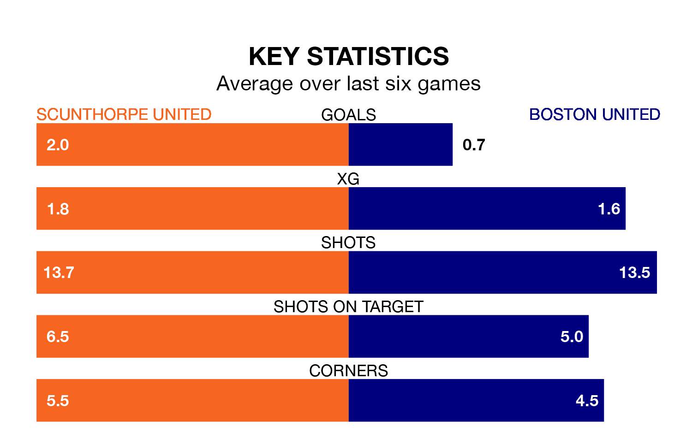

Scunthorpe United are heavy favourites to keep all three points at home in Saturday's kick-off against Boston United.
The Iron, who sit second in the National League North with 46 games played, are priced at 1.6 to seal victory at the Attis Arena.
Sitting four places and 13 points behind them in the table, Boston are 4.6 to win with *Betting Company*, while the draw is at 3.6.
With 84 goals in 46 games so far this season, Scunthorpe are the league's highest scorers with 1.8 goals per game. And they are conceding fewer than average, letting in 38 goals at a rate of 0.8 per game.
Boston are also above average scorers, with 1.5 goals per game, compared to a league average of 1.3. They have conceded 1.0 goal per game.
Scunthorpe United are in good form in the National League North, with four wins and a draw from their last six games.
With two wins and two draws over that period, Boston United's form is worse – they have taken eight points from 18, compared to the Iron's 13.
Over the last two years, Scunthorpe and Boston have played each other twice. they drew both of them.
Their last meeting was on January 6, when they played out a 2-2 draw.
Scunthorpe's last match was on April 20, a 2-1 win against Gloucester City.
Boston drew 0-0 with Alfreton Town last time out, on Tuesday.
Updated: 07:59 (UTC), 26/04/24